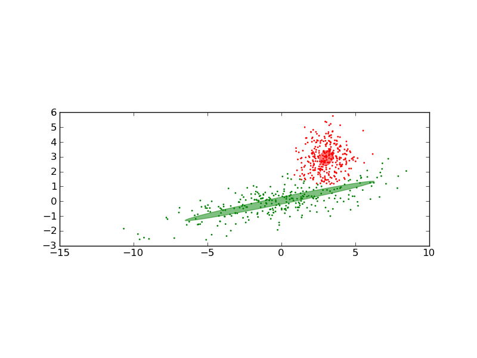

Gaussian Mixture Model Ellipsoids¶
Plot the confidence ellipsoids of a mixture of two gaussians.

Python source code: plot_gmm.py
import numpy as np
from scikits.learn import mixture
import itertools
import pylab as pl
import matplotlib as mpl
n, m = 300, 2
# generate random sample, two components
np.random.seed(0)
C = np.array([[0., -0.7], [3.5, .7]])
X = np.r_[np.dot(np.random.randn(n, 2), C),
np.random.randn(n, 2) + np.array([3, 3])]
clf = mixture.GMM(n_states=2, cvtype='full')
clf.fit(X)
splot = pl.subplot(111, aspect='equal')
color_iter = itertools.cycle (['r', 'g', 'b', 'c'])
Y_ = clf.predict(X)
for i, (mean, covar, color) in enumerate(zip(clf.means, clf.covars, color_iter)):
v, w = np.linalg.eigh(covar)
u = w[0] / np.linalg.norm(w[0])
pl.scatter(X[Y_==i, 0], X[Y_==i, 1], .8, color=color)
angle = np.arctan(u[1]/u[0])
angle = 180 * angle / np.pi # convert to degrees
ell = mpl.patches.Ellipse (mean, v[0], v[1], 180 + angle, color=color)
ell.set_clip_box(splot.bbox)
ell.set_alpha(0.5)
splot.add_artist(ell)
pl.show()